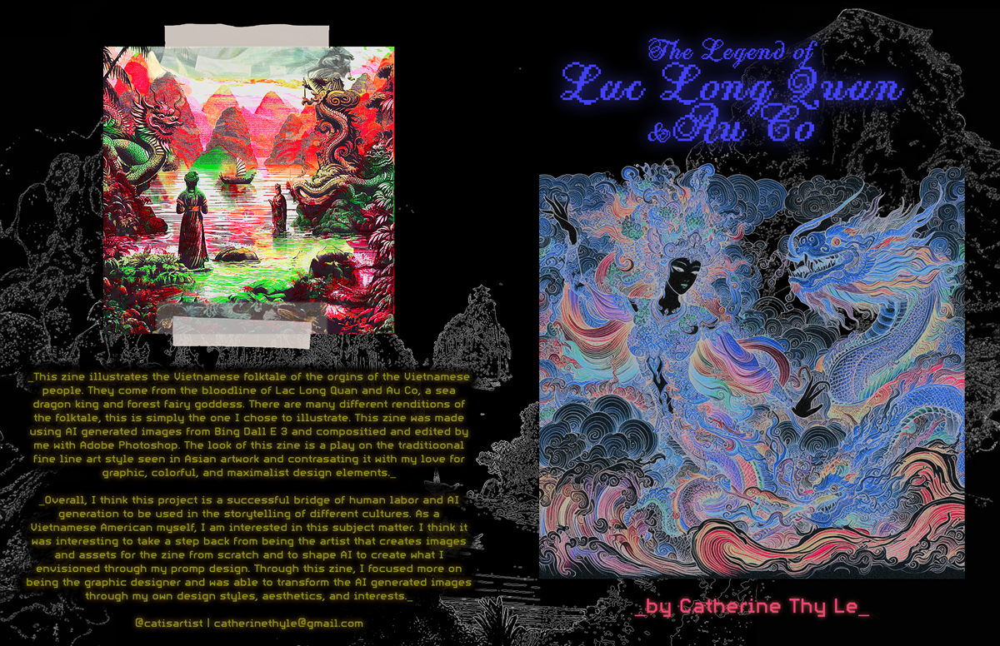

-The Legend of Au Co and Lac Long Quan-
A zine by Catherine Thy Lê. December 2023.
About the Project
This zine illustrates the Vietnamese folktale of the orgins of the Vietnamese people. They come from a bloodline of Lac Long Quan and Au Co, a sea dragon kind and forest fairy goddess. There are man different renditions of the folktale, this is simply the one I chose to illustrate. This zine was make using AI Generated images from Bing Dall E 3 and compositied and edited by me with Adobe Photoshop. The zine exists as a final product as a 8.5 in. x 11 in. zine (16 in. x 11 in. when laying open flat) with additional smaller zines (5.5 in. x 8.5 in.).
Overall, I think this project is a successful bridge of human labor and AI generation to be used in storytelling and different cultures. As a Vietnamese American myself, I am interested in this subject matter. I think it was interested to take a step back from being the artist that creates all the images and assets for the zine from scratch and to shape AI to create wheat I envisioned through my promp design, and focus more on transforming the AI generated images through my own design styles, aesthetics, and interests.
Project Images (Final Zine Spread)



Zine Composition Sketch/Brainstorm
Original Images Generated Through Bing Dall E 3